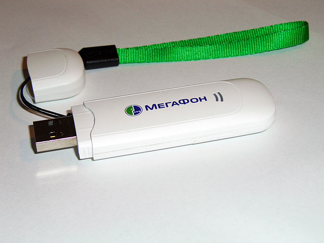

Быстрая разблокировка старых 3g модемов под linux

Я просто оставлю это здесь, как памятку, возможно ещё пригодится. Подобных мануалов масса, но в основном они ориентированы на наличие windows, в linux это оказалось даже проще. У меня есть отдельная коробочка, куда я складывал попадающие ко мне 3g/4g модемы на случай, если мне они понадобятся в будущем. И вот, сегодня я нашёл этот ящик пандоры и он оказался очень кстати. Среди прочих моделей, отыскался один Huawei e1550 от Мегафон. Одна из лучших в своё время моделей, легко поддавалась перепрошивке, можно было использовать как SIP транк и вообще, делать с ним что угодно. Но естественно, он был залочен на использование симкарт от мегафона. Всё, что нам потребуется - браузер, консоль и пакет minicom (sudo apt-get install minicom, в случае, если вы пользуетесь debian-based системой).
После подключения модема можно проверить, что он определился:
corpse@blue [09:10:42]:~$ lsusb | grep -i huawei
Bus 001 Device 042: ID 12d1:1003 Huawei Technologies Co., Ltd. E220 HSDPA Modem / E230/E270/E870 HSDPA/HSUPA Modem
Команда dmesg -w должна выдавать что-то подобное:
[1471966.021710] usb 1-2.4: New USB device found, idVendor=12d1, idProduct=1446
[1471966.021718] usb 1-2.4: New USB device strings: Mfr=2, Product=1, SerialNumber=0
[1471966.021723] usb 1-2.4: Product: HUAWEI Mobile
[1471966.021727] usb 1-2.4: Manufacturer: HUAWEI Technology
[1471966.027446] usb-storage 1-2.4:1.0: USB Mass Storage device detected
[1471966.027823] scsi host3: usb-storage 1-2.4:1.0
[1471966.028133] usb-storage 1-2.4:1.1: USB Mass Storage device detected
[1471966.029095] scsi host4: usb-storage 1-2.4:1.1
[1471967.058506] scsi 4:0:0:0: Direct-Access HUAWEI MMC Storage 2.31 PQ: 0 ANSI: 2
[1471967.059605] sd 4:0:0:0: Attached scsi generic sg1 type 0
[1471967.061382] scsi 3:0:0:0: CD-ROM HUAWEI Mass Storage 2.31 PQ: 0 ANSI: 2
[1471967.069716] sd 4:0:0:0: [sdc] Attached SCSI removable disk
[1471967.073767] sr 3:0:0:0: [sr0] scsi-1 drive
[1471967.073962] sr 3:0:0:0: Attached scsi CD-ROM sr0
[1471967.074110] sr 3:0:0:0: Attached scsi generic sg2 type 5
[1471967.224039] usb 1-2.4: USB disconnect, device number 41
[1471973.842705] usb 1-2.4: new full-speed USB device number 42 using xhci_hcd
[1471973.957660] usb 1-2.4: New USB device found, idVendor=12d1, idProduct=1003
[1471973.957667] usb 1-2.4: New USB device strings: Mfr=2, Product=1, SerialNumber=0
[1471973.957672] usb 1-2.4: Product: HUAWEI Mobile
[1471973.957676] usb 1-2.4: Manufacturer: HUAWEI Technology
[1471973.963137] usb-storage 1-2.4:1.0: USB Mass Storage device detected
[1471973.998871] option 1-2.4:1.0: GSM modem (1-port) converter detected
[1471973.999206] usb 1-2.4: GSM modem (1-port) converter now attached to ttyUSB3
[1471973.999448] usb-storage 1-2.4:1.1: USB Mass Storage device detected
[1471974.034784] option 1-2.4:1.1: GSM modem (1-port) converter detected
[1471974.035100] usb 1-2.4: GSM modem (1-port) converter now attached to ttyUSB4
[1471974.035300] usb-storage 1-2.4:1.2: USB Mass Storage device detected
[1471974.036206] scsi host3: usb-storage 1-2.4:1.2
[1471974.036573] usb-storage 1-2.4:1.3: USB Mass Storage device detected
[1471974.038141] scsi host4: usb-storage 1-2.4:1.3
[1471975.058268] scsi 4:0:0:0: Direct-Access HUAWEI MMC Storage 2.31 PQ: 0 ANSI: 2
[1471975.058867] sd 4:0:0:0: Attached scsi generic sg1 type 0
[1471975.060308] scsi 3:0:0:0: CD-ROM HUAWEI Mass Storage 2.31 PQ: 0 ANSI: 2
[1471975.068704] sd 4:0:0:0: [sdc] Attached SCSI removable disk
[1471975.071767] sr 3:0:0:0: [sr0] scsi-1 drive
[1471975.071980] sr 3:0:0:0: Attached scsi CD-ROM sr0
[1471975.072107] sr 3:0:0:0: Attached scsi generic sg2 type 5
Как видим, у нас появилось два устройства - /dev/ttyUSB3 и /dev/ttyUSB4. Иногда их бывает три. Нам нужно определить, на каком из них живёт модем. Сделать это проще всего с помощью команды ATZ (эх, молодость, молодость, модемы на 14400...). Набираем команду sudo minicom -D /dev/ttyUSB3 и затем в терминале миникома вводим ATZ и нажимаем энтер.
Добро пожаловать в minicom 2.7.1
ПАРАМЕТРЫ: I18n
Дата компиляции Aug 13 2017, 15:25:34.
Port /dev/ttyUSB3, 08:35:46
Нажмите CTRL-A Z для получения подсказки по клавишам
ATZ
OK
Если модем не отвечает, пробуйте следующий порт. Теперь нужно проверить статус блокировки:
AT^CARDLOCK?
^CARDLOCK: 1,10,0
OK
Из трёх цифр, разделённых запятой, первая (единица) означает, что модем заблокирован, вторая (десятка) - это количество попыток разблокировки. Далее нам для получения кода разблокировки нужен IMEI. Его можно получить следующим образом:
AT+CGSN
356052041092769
OK
356052041092769 - это и есть наш IMEI. Теперь идём по ссылке http://calc.gmss.ru/#, вбиваем там в поле IMEI и получаем четыре кода. Так как модем у нас достаточно старый, то нас интересует код первой версии (v1 code). Если ресурс недоступен, то гугл с лёгкостью подскажет ещё несколько подобных. Если ваш модем более новый, то вероятно вам потребуется код второй версии или v201. Благо 10 попыток разблокировки позволяют поставить все три эксперимента и неоднократно. В моём случае код был такой: 62982400. Далее в терминале отдаём команду на разблокировку с полученным кодом:
AT^CARDLOCK="62982400"
OK
Теперь проверяем снова статус блокировки:
AT^CARDLOCK?
^CARDLOCK: 2,10,0
OK
Статус блокировки сменился с 1 на 2 - это означает, что модем успешно разблокирован. Количество попыток при этом не изменилось.
Ну и напоследок полезный ресурс со списком AT команд: https://www.developershome.com/sms/atCommandsIntro.asp
Теги: linux